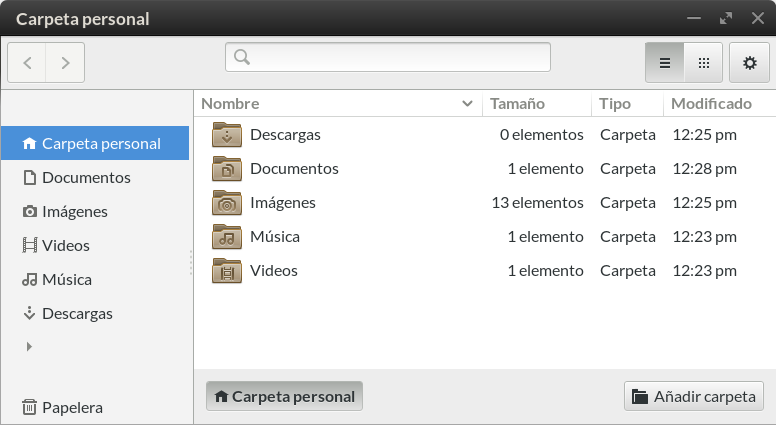

»
Files, folders & search

Common tasks
Browse files and folders
Copy or move files and folders
Delete files and folders
Preview files and folders
Rename a file or folder
Search for files
Sort files and folders
More topics
Browse files on a server or network share
File properties
Find a lost file
Open files with other applications
Recover a file from the Trash
Share files by email
Write files to a CD or DVD
File manager preferences
Documents
Documents
—
Organize the documents stored locally on your computer or created online.
Removable drives and external disks
Open applications for devices or discs
—
Automatically run applications for CDs and DVDs, cameras, audio players, and other devices and media.
Safely remove an external drive
—
Eject or unmount a USB flash drive, CD, DVD, or other device.
Backing up
Back up your important files
—
Why, what, where and how of backups.
Check your backup
—
Verify your backup was successful.
Frequency of backups
—
Learn how often you should backup your important files to make sure that they're safe.
Restore a backup
—
Retrieve your files from a backup.
Where can I find the files I want to back up?
—
A list of folders where you can find documents, files and settings that you may want to back up.
Tips and questions
Edit folder bookmarks
—
Add, delete, and rename bookmarks in the file manager.
Hide a file
—
Make a file invisible, so you can't see it in the file manager.
Select files by pattern
—
Press
Ctrl
+
S
to select multiple files which have similar names.
Set file permissions
—
Control who can view and edit your files and folders.
Templates for commonly-used document types
—
Quickly create new documents from custom file templates.
What is a file with a "~" at the end of its name?
—
These are backup files. They are hidden by default.
More Information
GNOME Help
— A guide for GNOME 3 desktop users
 » »
» »